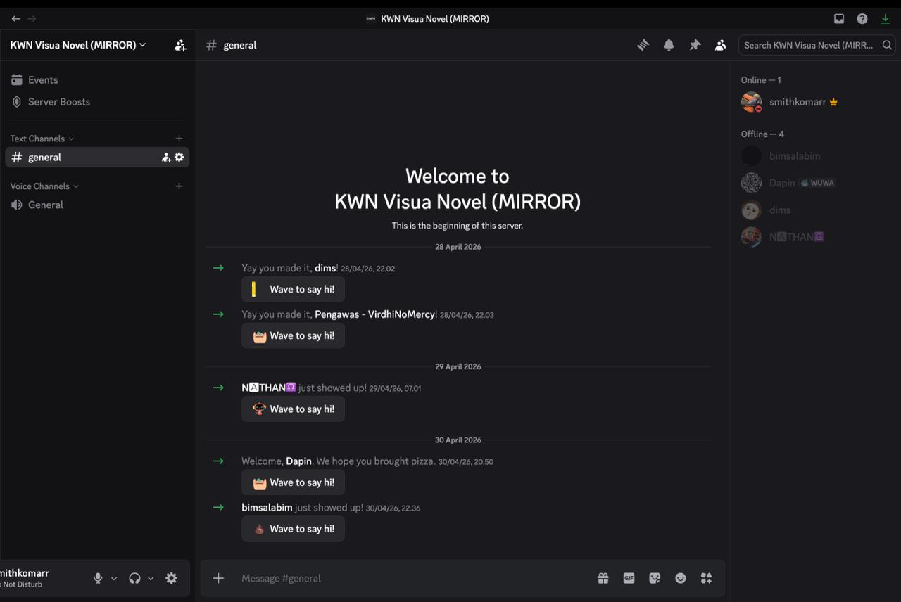
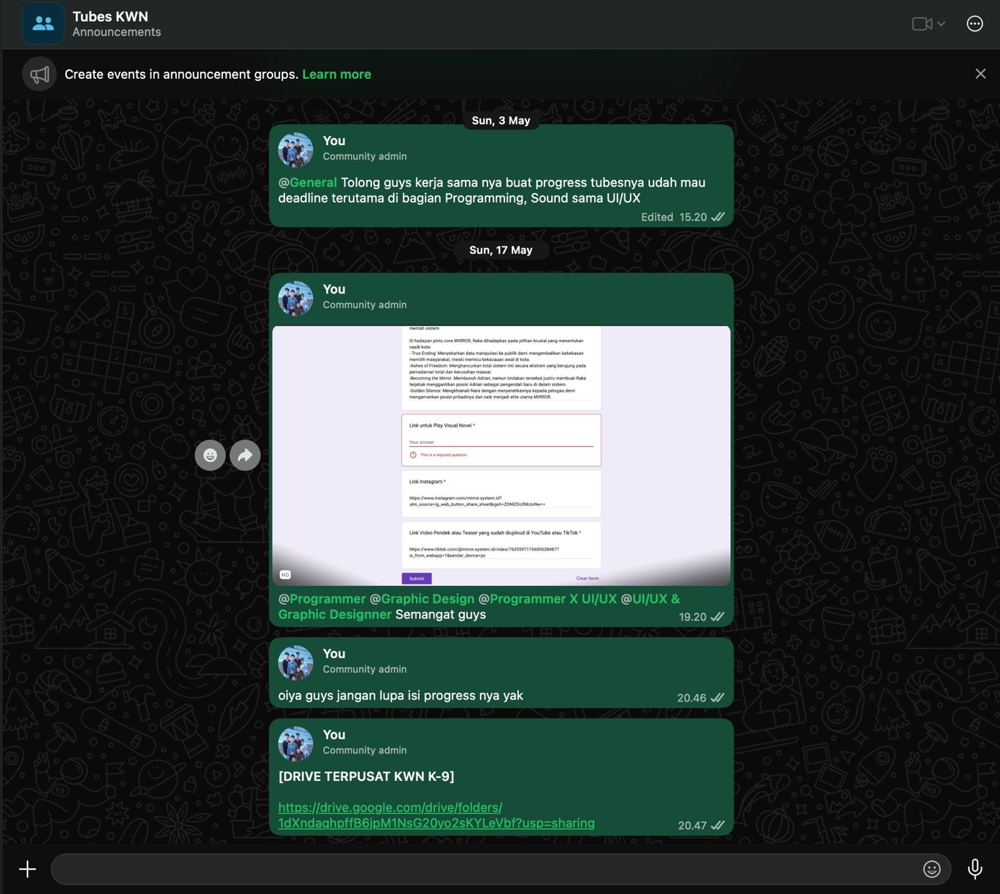

Character Map
Kompetensi target
Membedakan person, personality, dan character serta memilih objective, repertoire, dan language yang sesuai.
Evidence wajib
- Lima character dari sedikitnya tiga domain kehidupan.
- Objective, responsibility, repertoire, dan risiko tiap character.
- Satu contoh perubahan language ketika character berubah.
Lima Character
| Domain dan character | Person & relationship | Objective & responsibility | Repertoire & language | Risiko dan latihan |
|---|---|---|---|---|
| Intra - Self - Reflective Learner | Diri sendiri saat melakukan review ulang materi perkuliahan (Matematika Diskrit). | Memahami materi lebih dalam (logika) sebelum melanjutkannya ke materi selanjutnya ataupun sebagai perisiapan untuk quiz. | Self-talk analitis dan pembuktian bertahap; “Kalau ekuivalensi logika ini diterapkan ke dalam kondisi if-else di program, jadinya seperti apa ya? Coba aku buktikan pakai tabel kebenaran dulu.” | Terlalu fokus untuk menghafal rumus tanpa memahami makna penggunaannya; Latihan Selalu kaitkan setiap notasi abstrak dengan contoh kalimat dunia nyata atau algoritma. |
| Friends - Teman sebaya | Teman satu kelompok tugas besar PSTI. | Menjaga alur kerja, adil dalam pembagian tugas, menjaga solidaritas, dan melepas penat setelah tugas selesai. | Santai, empatik; “Ayo kita istirahat dulu sebelum milestone selanjutnya rilis.” | Terlalu cepat memberi saran saat teman mengeluh; Latihan: Dengarkan masukan dan pendapat dari temen terlebih dahulu tanpa memotong. |
| Family - Adik | Adik yang sedang mempertimbangkan untuk memilih jurusan di SMA. | Membantu adik dalam proses pengambilan keputusan, memberikan dukungan emosional, dan menjadi teladan yang baik. | Empatik, sabar; “Aku paham kamu sedang bingung, mari kita bahas bersama-sama.” | Terlalu sering memaksa adik untuk mengikuti pilihan saya; Latihan: Dengarkan pendapat adik dan hormati keputusannya. |
| Community - Staff Logistik (Anggota panitia) | Staff logistik dalam sebuah panitia kegiatan. | Menjaga komunikasi yang baik dengan tim, memastikan semua persiapan berjalan lancar, dan memberikan dukungan kepada anggota panitia lainnya. | Profesional, responsif; “Ayo kita koordinasi lagi supaya semua bisa berjalan mulus.” | Terlalu mudah terpengaruh oleh tekanan waktu; Latihan: Prioritaskan tugas berdasarkan urgensi dan dampaknya. |
| Work / Academic — Project Manager | Anggota tim multidisiplin (Programmer, UI/UX, Sound Designer, Graphic Designer, Script Writer, dll) | Mengarahkan visi proyek (tema, konsep, alur) dan menyinkronkan ritme kerja antar divisi agar visual novel selesai sesuai target waktu dan tujuan mata kuliah. | Asertif dan fasilitatif; “Bagaimana progres aset karakter dari tim desainer? Apakah ada kendala saat script cerita ini mau diintegrasikan ke engine oleh programmer?” | Terjebak micromanaging atau memaksakan visi cerita terlalu kaku; Latihan: Delegasikan otonomi teknis kepada spesialis di divisi masing-masing dan biasakan bertanya “Apa blocker terbesarmu saat ini yang bisa aku bantu selesaikan?”. |
Episode yang dianalisis
Konteks: Implementasi percabangan cerita Bab 1 ke engine Ren’Py terlambat empat hari dari jadwal internal. Awalnya muncul praduga bahwa Budi “kurang komitmen dan menyepelekan tanggung jawab”. Itu adalah story, bukan fakta. Fakta yang tersedia baru satu: build narasi di repository belum diperbarui sesuai tanggal kesepakatan.
Objective: Beralih dari asumsi “kurang komitmen” menuju penggalian hambatan nyata tanpa membuat lawan bicara defensif, serta menyepakati pembagian alur kerja dan tenggat baru yang realistis sambil menjaga hubungan kerja tim.
Azka (PM): “Dimas, progres build untuk cabang narasi Bab 1 belum ter-update di repository. Boleh ceritakan apa kendala teknis yang sedang kamu hadapi saat memasukkan script-nya?”
Dimas: “Script dialognya banyak teks formatting khusus yang bikin parser di engine-nya terus-menerus error, jadi aku harus bersihin manual satu per satu.”
Azka (PM): “Paham, jadi hambatan utamanya ada di ketidaksesuaian format teks dari script writer ke script engine, betul begitu?”
Dimas: “Iya, betul. Ditambah minggu ini ada responsi praktikum, jadi waktuku habis di situ.”
Azka (PM): “Oke, ini masalah format data, bukan lambat kerja. Supaya kamu tidak overload, ada dua opsi: script writer yang kita minta rapikan format teksnya dari awal, atau kita sederhanakan format dialognya dulu untuk demo ini. Menurutmu opsi mana yang paling cepat jalan?”
Dimas: “Lebih aman script writer-nya yang merapikan format teksnya dulu sebelum dioper ke aku.”
Response Dimas mengubah repertoire saya dari menagih tenggat menjadi problem-solving bersama. Agreement akhirnya: Saya membuat template format teks baru di Google Docs untuk script writer malam itu juga, dan Dimas menyanggupi integrasi rampung dalam 2 hari setelah naskah rapi diterima.
Perubahan language
Sebagai teman sebaya, saya akan berkata, “Ayo kita istirahat dulu hari ini, jangan dipaksain biar nggak burnout, nanti kita gas lagi.” Sebagai Project Manager, saya berkata, “Target rilis demo visual novel tinggal dua minggu lagi; bagian script mana yang saat ini jadi kendala dan butuh kita selesaikan bersama?” Core care tetap ada, tetapi responsibility dan action berbeda.
Konteks performance
Tanggal dan setting: 3 Mei 2026, Diskusi berkala malalui voice call Discord Kelompok Tugas Besar Visual Novel Game.
Persons dan relationship: Dimas, rekan satu angkatan yang bertugas sebagai programmer integrasi di engine game. Hubungan pertemanan sebaya yang dalam proyek ini memiliki relasi kerja sebagai Project Manager dan tim teknis.
Objective dan initial state: Nyatakan perubahan yang ingin dicapai serta evidence state awal.
Evidence


Analisis komunikasi
| Elemen | Evidence dan analisis |
|---|---|
| Person & character | Dimas diposisikan sebagai “rekan dengan blocker teknik”, bukan dilabeli “kurang komitmen”. Terjadi pergeseran peran: awalnya saya memegang awalnya saya memegang power otoritatif sebagai Project Manager penagih tenggat waktu, lalu secara sadar merendahkan power tersebut untuk setara dengan Dimas, memberinya ruang sebagai ahli teknis untuk merumuskan akar masalah. |
| Objective & state | Ada objective yang saling bersaing: saya sebagai PM ingin mengejar timeline integrasi script ke engine, sementara Dimas memiliki objective bertahan dari tekanan beban akademik (responsi praktikum) agar tidak burnout. State berhasil diubah dari ketegangan (keterlambatan) menjadi kompromi jadwal yang mempertemukan kedua objective tersebut. |
| Repertoire & language | Bahasa instruktif diubah menjadi eksploratif. Penggunaan paraphrase (“Oh, jadi hambatan utamanya ada di ketidaksesuaian format teks…”) terbukti valid menurunkan sikap defensif lawan bicara dan membuka ruang diskusi logis. |
| Response & adaptation | Adaptasi terjadi secara lincah. Fakta baru (kesulitan troubleshoot format teks manual) langsung mengubah arah pembicaraan di detik itu juga; dari sekadar menuntut hasil menjadi memodifikasi alur kerja (merapikan naskah di hulu lewat script writer). |
| Agreement/action | Disepakati pembuatan template naskah baru dan tenggat integrasi diubah menjadi 2 hari setelah naskah rapi diterima. Ownership masalah kini diselesaikan secara kolaboratif lintas divisi. |
| Relationship outcome | Risiko konflik terbuka berhasil dihindari. Rasa saling percaya (trust) justru meningkat karena terbentuk rasa aman (psychological safety); anggota tim tahu mereka bisa jujur tentang kendala (termasuk tugas kuliah) tanpa langsung dihakimi. |
Penggunaan AI
Nyatakan Tidak menggunakan AI atau jelaskan:
- alat dan peran AI: Gemini untuk memandu alur pengerjaan tugas dan alur pembuatan code yang akan dibuat di quarto portofolio.
- prompt atau instruksi penting: “Buatkan contoh percakapan yang menunjukkan perubahan repertoire dan language ketika character berubah dari teman sebaya menjadi rekan kerja dalam proyek”.
- bagian output yang digunakan, diubah, atau ditolak;
- pemeriksaan accuracy, privacy, dan authority: Memeriksa data pribadi rekan agar tidak terbuka di publik, memeriksa fakta dan referensi yang digunakan, serta menilai apakah saran AI sesuai konteks.
- apa yang tetap Anda pelajari sebagai manusia: Memahami konteks komunikasi, menilai niat dan emosi lawan bicara, serta menyesuaikan language dan repertoire agar tetap menjaga hubungan kerja yang sehat.
Feedback dan tindak lanjut
Feedback yang diterima: Rekan tim lain mencatat bahwa meskipun saya sudah menggunakan pertanyaan terbuka, nada intonasi suara saya di awal percakapan masih terdengar sedikit mendesak.
Adaptation/replay: Kedepanya, saya akan menambahkan jeda sebelum bertanya dan menekankan empati di awal percakapan agar lawan bicara merasa lebih nyaman.
Next practice: Menerapkan 5 detik jeda sebelum bertanya dan menekankan empati di awal percakapan, serta meminta umpan balik dari rekan tim setelah percakapan untuk memastikan nada suara saya terdengar lebih ramah dan tidak mendesak.
Self-assessment
| Dimensi | Skor 1–4 | Evidence singkat |
|---|---|---|
| Person & Character | 4 | Fakta dipisahkan dari opini secara sadar. Dinamika pergeseran dianalisis eksplisit. |
| Objective & State | 4 | Sukses menavigasi competing objectives hingga mencapai solusi kolaboratif. |
| Repertoire, Language & AI | 4 | Bahasa paraprhase berhasil meredakan tensi; AI digunakan sebagai asisten simulasi dan formatting secara kritis dengan batasan manusia yang jelas. |
| Response & Adaptation | 4 | Informasi hambahatan baru secara proaktif merombak struktur pembagian kerja (actionable options) seketika. |
| Agreement, Action & Relationship | 4 | Kesepakatan tenggat waktu baru dan tanggung jawab lintas divisi tercatat jelas, trust dalam |
Total: 20 / 20
Assessment dosen
Skor: — / 20 Evidence yang mendukung: — Prioritas perbaikan: — Keputusan: Belum dinilai / Perlu revisi / Tercapai